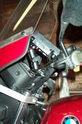
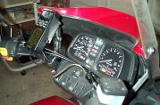
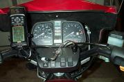

Mar 1, 2001
These are pictures of a RAM-mount GPS mount, designed specifically for the Garmin 12 series of GPS receiver. I've had a 12XL for a while, but hadn't found a really good use for it, until I stumbled across this mount. My devious little mind got going, and I ordered one straight away (from www.gps4fun.com, where the prices are cheap and they were really nice to deal with). It's quite useful, and I love having this navigational tool onboard.
The power cable is a standard Garmin power-only cable, which I've modified with a quick-disconnect plug, so that I can switch between the BMW power plug and the regular cigarette lighter plug -- not necessarily a modification for the faint of heart, but also not very hard (just make sure your quick disconnect is keyed so you can't connect it backwards, and check twice for polarity before plugging anything in).
The mount itself is surprisingly sturdy, and does its job very well. It can be set in any number of positions, and when you set it in a position, it stays there. The way things are set up in these pictures, I can push hard on the GPS buttons without anything flexing, much less slipping. Not bad for $31 plus shipping!
I admit, it's geeky, but if you're looking at this site, chances are you're at least part geek yourself, and admit it, this is cool.
|  |  |  |
{kind=link}
{kind=link}
{kind=link}